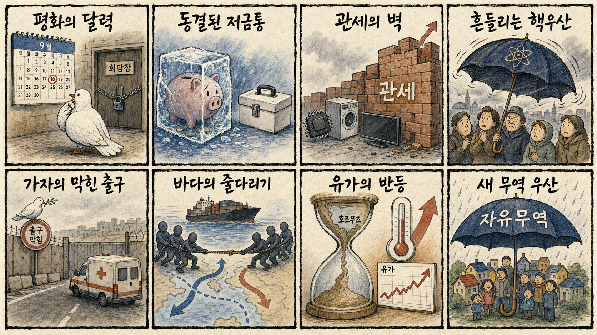
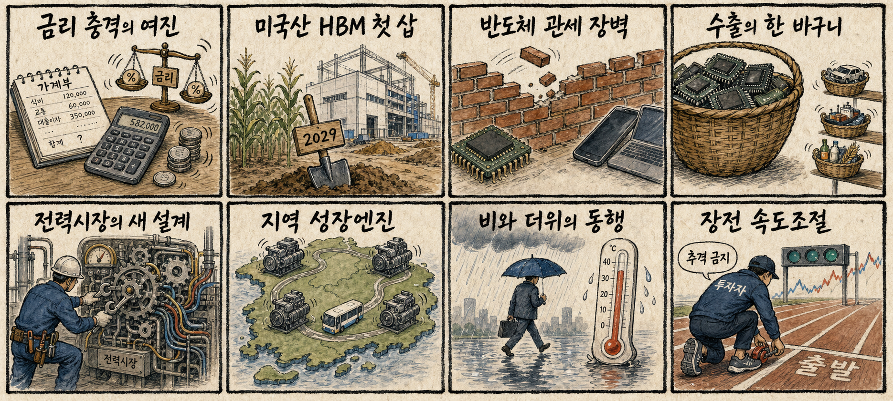

01
크라우드스트라이크 · 208.25→227.96달러 · +9.46%
내용요약 사이버보안 소프트웨어 매수세 속 시가 대비 9.46% 상승했습니다.
예상여파 보안 지출의 견조함을 시사하지만 하루 급등 뒤 변동성 확대는 경계해야 합니다.
MORNING_BRIEFING_20260828
작성 시각: 2026-08-28 06:39 KST · 직전 미국 정규장과 2026-08-28 KST 당일 공개 기사 기준
직전 미국 정규장인 8월 27일에는 다우 +0.20%, S&P 500 +0.72%, 나스닥 +1.57%로 기술주 중심 상승 마감했습니다. 엔비디아는 시가 대비 +2.42%, 브로드컴 +2.70%, 마이크로소프트 +2.10%였고 팔란티어와 크라우드스트라이크도 강했습니다. 엔비디아 실적 안도와 AI 소프트웨어 선호는 국내 HBM 심리에 우호적이지만, 마이크론 -3.27%와 AMD -1.11%는 반도체 내부 차별화를 예고합니다.
| 지수 | 종가 | 등락률 | 한국 증시 시사점 |
|---|---|---|---|
| 다우존스 | 53,569.44 | +0.20% | 경기주 완만한 동행 |
| S&P 500 | 7,730.99 | +0.72% | AI·기술주 심리 우호 |
| 나스닥 종합 | 26,541.35 | +1.57% | AI·기술주 심리 우호 |
엔비디아 실적 안도와 AI 소프트웨어 강세가 기술주를 이끌었습니다.
SK하이닉스가 미국 인디애나 HBM 거점 착공 소식을 전했습니다.
미국 반도체 관세 확대 검토와 국제유가 반등을 함께 봅니다.
장전 갭과 검증 자료 부족으로 추천 문턱을 통과한 후보가 없습니다.
8월 27일 보고서는 검증 문턱을 통과한 후보가 없어 공식 추천을 내지 않았습니다. 게시 당시 판단은 그대로 유지되며 사후 종목을 추가하지 않습니다.
| 시장 | 종가 | 등락률 | 해석 |
|---|---|---|---|
| KOSPI | 6,912.37 | +1.53% | 27일 시가 대비 -1.20% |
| KOSDAQ | 837.65 | +1.30% | 27일 시가 대비 +1.11% |
| 다우존스 | 53,569.44 | +0.20% | 완만한 상승 |
| S&P 500 | 7,730.99 | +0.72% | AI·기술주 강세 |
| 나스닥 종합 | 26,541.35 | +1.57% | AI·기술주 강세 |
크라우드스트라이크가 시가 대비 +9.46%로 강했습니다.
팔란티어 +3.91%, 마이크로소프트 +2.10%였습니다.
엔비디아 +2.42%, 브로드컴 +2.70%, 인텔 +2.38%였습니다.
마이크론 -3.27%, AMD -1.11%로 차별화됐습니다.
내용요약 사이버보안 소프트웨어 매수세 속 시가 대비 9.46% 상승했습니다.
예상여파 보안 지출의 견조함을 시사하지만 하루 급등 뒤 변동성 확대는 경계해야 합니다.
내용요약 AI 데이터 분석 플랫폼 선호로 시가 대비 3.91% 상승했습니다.
예상여파 AI 소프트웨어 심리에 우호적이나 높은 밸류에이션은 국내 관련주의 추격 위험을 높입니다.
내용요약 AI 반도체 강세장에서도 시가 대비 3.27% 하락했습니다.
예상여파 HBM 수요 기대와 별개로 메모리 종목별 가격·공급 우려가 차별화를 만들 수 있습니다.
내용요약 AI 네트워크·맞춤형 칩 기대 속 시가 대비 2.70% 상승했습니다.
예상여파 AI 인프라 투자 범위가 GPU 밖으로 넓어져 네트워크·기판·패키징 수요를 지지할 수 있습니다.
내용요약 실적 발표 뒤 안도 매수로 시가 대비 2.42% 상승했습니다.
예상여파 국내 HBM 심리에 긍정적이지만 개장 초 과도한 갭 상승은 추격하지 않는 편이 안전합니다.
나스닥 +1.57%와 엔비디아·브로드컴 강세, SK하이닉스의 미국 HBM 거점 뉴스는 국내 AI 반도체 심리에 긍정적입니다. 다만 전일 KOSPI는 높은 시가에서 밀리며 시가 대비 -1.20%였고 마이크론·AMD 약세, 미국의 반도체 관세 확대 검토가 차별화 위험을 높입니다. 개장 초 반도체 갭을 추격하기보다 원화, 외국인 현물, SK하이닉스·삼성전자의 시초가 유지 여부를 확인합니다.
오늘은 추천 없음 — 현금 관망
미국 기술주 강세에도 국내 대형 반도체의 장전 갭 위험이 크고, 전일까지의 외국인·기관 수급, 컨센서스 변화, 30건 이상 유사 조건 확률 보정, 예상 손익비 1.5 이상을 동시에 검증한 종목이 없습니다. 종합점수와 상승확률을 임의로 만들지 않습니다.
관심 연결종목 HBM·AI칩·데이터센터 전력은 뉴스 연결 관찰 대상일 뿐 매수 추천이 아닙니다. 개장 초 급등 종목은 추격매수 금지이며 수급 확인 전 진입을 피합니다.
엔비디아발 강세가 국내 현물 수급으로 이어지는지 봅니다.
반도체 완제품 관세 확대 관련 공식 발표를 점검합니다.
전일 KOSPI 장중 되밀림 뒤 외국인 방향을 확인합니다.
유가 반등과 전국 비·높은 습도에 따른 비용을 봅니다.
핵심 요약: AI 투자는 5GW급 데이터센터, 플랫폼 인수, 국산 AI칩 자금조달, 미국 HBM 생산으로 범위가 넓어지고 있습니다. 동시에 전력과 탄소중립 비용이 AI 인프라의 핵심 제약으로 부상했습니다.
내용요약 대형 AI 인프라 사업 스타게이트의 확보 전력이 5GW를 넘기고 오하이오로 확장한다는 보도입니다.
예상여파 AI 데이터센터 증설은 칩·서버·냉각·전력망 수요를 함께 키우는 반면 지역 전력 가격과 계통 부담 논쟁도 확대할 수 있습니다.
내용요약 엔비디아가 AI 오픈소스 플랫폼 허깅페이스를 129억달러에 인수하기로 합의했다는 당일 보도입니다.
예상여파 모델 유통과 개발자 생태계까지 통합하려는 움직임은 AI 플랫폼 경쟁과 독점 규제 논의를 동시에 자극할 수 있습니다.
내용요약 SK하이닉스가 미국 인디애나에 HBM 생산거점을 구축해 2029년 양산을 목표로 한다는 보도입니다.
예상여파 엔비디아와 가까운 현지 공급망을 확보하면 고객 대응력이 높아지지만 대규모 투자비와 미국 생산비 관리가 관건입니다.
내용요약 국내 AI칩 스타트업 퓨리오사AI가 8000억원 규모 프리IPO 마무리를 앞두고 있다는 보도입니다.
예상여파 국산 AI 가속기 상용화 자금이 늘 수 있으나 실제 고객 확보와 양산 수율이 기업가치의 핵심 검증 요소입니다.
내용요약 반도체와 데이터센터의 급증하는 전력 사용이 탄소중립 목표와 충돌한다는 분석입니다.
예상여파 에너지 효율 높은 칩과 재생에너지·원전·저장장치 조달이 AI 산업의 비용과 입지 경쟁력을 좌우할 수 있습니다.
핵심 요약: 우크라이나 평화회담 재개 가능성과 동결자산 지원 논의가 교차하고, 미국의 반도체 관세 확대 검토가 공급망을 압박합니다. 가자 인도주의 위기와 미·이란 협상 약화에 따른 유가 반등도 이어집니다.
내용요약 우크라이나 대통령 비서실장이 러시아와의 평화회담이 9월 재개될 수 있다고 밝혔다는 보도입니다.
예상여파 회담 재개는 전쟁 위험 프리미엄을 낮출 여지가 있지만 실제 휴전 조건과 현장 충돌 완화 여부가 선행돼야 합니다.
내용요약 EU가 동결된 러시아 자산을 활용한 우크라이나 지원 방안을 재추진하며 벨기에를 압박한다는 보도입니다.
예상여파 자산 활용 방식은 지원 재원을 늘릴 수 있으나 법적 정당성과 유럽 금융시장 신뢰를 둘러싼 논쟁이 커질 수 있습니다.
내용요약 미국이 반도체 칩뿐 아니라 칩이 들어간 완제품까지 관세 적용을 넓히는 방안을 검토한다는 보도입니다.
예상여파 전자·자동차·가전 공급망의 비용 상승과 생산지 재배치가 빨라지고 수출기업의 가격 전략도 영향을 받을 수 있습니다.
내용요약 가자지구의 인도주의 위기와 국제사회의 무관심을 지적한 당일 보도입니다.
예상여파 구호 접근이 개선되지 않으면 민간 피해와 지역 불안이 커지고 휴전·재건 협상의 정치적 비용도 높아질 수 있습니다.
내용요약 미국과 이란의 협상 기대가 약화하며 브렌트유가 2.1% 상승했다는 보도입니다.
예상여파 유가 반등은 에너지 수입국의 물가와 운송비에 부담이며 호르무즈 관련 뉴스에 시장 변동성이 다시 커질 수 있습니다.

핵심 요약: 금리 충격 이후 환율과 증시 차별화가 주목되고, SK하이닉스의 미국 HBM 생산거점이 공급망 재편의 중심에 섰습니다. 지역 성장산업, 반도체 수출 편중, 비와 높은 습도도 오늘의 주요 이슈입니다.
내용요약 금리 충격의 안착 여부와 환율 변수를 보며 오늘 증시가 속도 조절과 종목별 차별화를 보일 수 있다는 장전 분석입니다.
예상여파 은행·건설·성장주의 민감도가 달라질 수 있어 지수 방향보다 원화와 외국인 수급을 함께 봐야 합니다.
내용요약 SK하이닉스가 미국 인디애나에서 연간 수십만장 규모 HBM 생산을 목표로 공장 건설에 착수했다는 보도입니다.
예상여파 국내 D램과 미국 패키징을 잇는 공급망은 고객 밀착도를 높이지만 투자 집행과 생산 안정화 일정이 중요합니다.
내용요약 전남·광주 통합 구상이 4대 초격차 산업 중심의 서남권 성장엔진을 내세웠다는 보도입니다.
예상여파 지역 산업 육성과 일자리 확대 기대가 있지만 재정 배분과 사업 중복 조정이 실제 성과를 좌우할 수 있습니다.
내용요약 한국 수출이 반도체 대기업에 과도하게 의존하는 구조적 취약성을 지적한 분석입니다.
예상여파 반도체 호황은 단기 성장에 유리하지만 중소기업·서비스·신산업의 수출 다변화가 충격 완충력을 높일 수 있습니다.
내용요약 전국 곳곳에 비와 소나기가 내리고 체감온도 33도 안팎의 후텁지근한 날씨가 이어진다는 보도입니다.
예상여파 출근길 침수와 돌풍에 대비하고 야외 작업자는 높은 습도에 따른 온열질환을 함께 경계해야 합니다.
